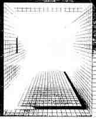
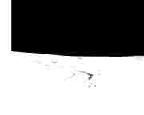

Raynaud and Zupanc: Tropes of NihilismNihilism can be boring, stupid, annoying, depressing, romantic,frightening, and even funny. Two recent shows, Jean-Pierre Raynaud's retrospective at the M.C.A., and Terri Zupanc's show at the C.C.A., both can be construed as playing at a Nihilism of sorts. And yet they do it in such different ways that this in itself is noteworthy, especially when one considers the contradiction in using nihilism in art at all as a trope, an expression of a condition (content) or as a contradiction; for no matter how far one pushes it, there is always something there, no matter how devalued. Even in a bell jar, there is the bell jar itself to delimit and "define" the space of absence. Even in Klein's empty gallery there is the Gallery and the air in it. If a contradiction is in operation, it must be, to apply a bit of theory, a productive opposition (Dionysus and Apollo, the producer and the object of production) or a repressed opposition (the tragic and the Platonic,use value and exchange value). These two artists, both quite accomplished and polished as presenters, present this distinction quite explicitly. Raynaud's work, with few exceptions, seems to thrive on the representation of a nihilistic sense of loss, i.e. lack. This lack is organized around the loss of his wife, who notably did not die, but left him (i.e. willed him away, and who wouldn't?). This is a moment he never recovers from but obsessively represents. Raynaud organizes his whole aesthetic production around his repressed subjectivity. His simple representation does not free him, force him to deal with his loss, but only points it out. Anyone with even a rudimentary knowledge of Freud's work on the subject will realize that the repeated representation of a traumatic event is not a cure for overcoming the trauma, but a symptom of the trauma itself, an indication that the trauma has not been overcome and that it will not be until it is consciously realized. Now while the event with his wife is probably not really of his own doing, even if it appears to be. His house, which he "bought for" his wife, he has covered completely with sterile white tile. It is a machine of reflection. While he lives in it presently as a little repressed man, the house is a representation of his repression, a repression of his own repression (the fixed Jungian "my house is always myself). While his reflection is clever and quite possibly intentional, it does not overcome, or even attempt to overcome through a passive critique, the nest of repression which Raynaud has engineered around himself. This machine would have been impossible to engineer if it were not preexistent to Raynaud the subject's operations.
Raynaud's house insists upon the isolation of the individual engaging in an isolated struggle against personal repression and trauma. These repressions, subjective and isolated in appearance, are social in origin. Raynaud's approach seems once again an attempt to attack with futility a problem which is only further reified. Raynaud recirculates and re-presents the problem on another level but fails to dispel it. His alienation is reified by his symbolic struggle. This critique may seem preemptive, considering the amount of work which Raynaud has produced for social spaces (like Catholic monasteries). Are these not attempts to address the social, to become socially engaged? Only once am I convinced of it: the vacated public housing project which he has been commissioned to covered in his signature white tile. We are told in the catalogue of this show that Raynaud represents the merging of two great movements of the 1960's, pop and minimalism. Well, yes, but in his work they are opposed as a repression of production and not production sui generis. He borrows from the tropes of both: the serial, the mass produced, the reductive, the grid, but only as it suits his repressed production and his production of repression (anti-production). More accurately, Raynaud re-produces both, to recoup them (as all art is recouped these days in a matter of a few years) as mere signs of symbolic value, detached, uncritical, unproductive and immediately capable of exchange. If minimalism ever tried to reach the body; if pop ever critiqued the system of (early) late spectacular capital, that is lost on Raynaud. The tropes of pop and minimalism are vehicles for him to represent repeatedly his sense of lack. Raynaud's mourning is simple self-indulgence (oh, little me!, oh, little me!!). He wallows in it. For the past 20 odd years he has rolled in it like a pig in mud; no, more like a baby in its own shit, but Raynaud is not a baby. He is not the madman clutching the straw in the picture he obsessively reproduces, but he has gained recognition (and no doubt a good deal of money) posing as this madman. Perhaps this is the sole positive aspect of his work, posing as a fictive character he has invented; the question is does he realize it is his invention? A simple neurotic, a hypochondriac who only believes (and secretly wishes) he is a schizophrenic. His work is so clean, so retentive: he wants to keep it all to himself (No one else can see my house.).The moments when he shows his work to authority (the art judge), we know the meaning of this gift (Look mommy, look, it's for you, I'm a good J-P.). Here in his white tiled W.C., with all of his little (no doubt well fertilized) potties (and his big potties too!!!) that the flowers don't like to grow in (they have, like his wife, learned to keep out of J-P's potties), he breeds need and represses desire (one good fecal fete and he would be a halfway interesting artist, I'd wager). Instead he pots everything, keeps it all clean and clinical, in search of pure beauty:"Today pure beauty is not only something we need, but it is the only means of manifesting in a pure way the universal force which is in all things, [God, shit, exchange value] it is identical to`everything unveiled in the past in the name of divinity, [damn right] which is indispensable to us poor human that we are, to live and find equilibrium, because things in and of themselves stand against us, the most material world does battle with us {Raynaud}.  Terri Zupanc uses what could be called the "tropes of nihilism":the desolate winter landscape, devoid of life, flora or fauna, painted in reductive black and white. From a distance these paintings may seem little more than color field paintings consisting of a large white area with a black stripe across the top of the canvas. But then there are the tracks. These appear as dark stripes or spots in the snow, like footprints or tire tracks. Tracks of some life traversing or circulating around the barren plane, belying some life through the signsof its passing even while the living bodies which would lay these tracks are absent. Some of the tracks lead off the plane of representation, while others (perhaps) more importantly do not, but recirculate or end abruptly, impossibly. These tracks are indices of bodies which have either left off the plane of representation or have inexplicably disappeared. These tracks are divided as signs. On the one hand tracks in the snow are natural signs, unlike the linguistic or symbolic sign, which is arbitrary. The indexical sign points to its signified because of a "causal" connection. In this case the footprints point to the human, machineor animal who's feet have left the signifying mark. I say divided because these footprints are not footprints, but rather painted representations of them. These are arbitrary symbolic signs of natural signs. This system of signs folds back on itself productively like an envelope: natural signs and signs of nature. Painting is almost, but not quite, devoid of subject and form. These tracks do not index the absence of some wanderer; rather they index the painter and the painter's absence in the painting. The marks on the canvas, like the tracks in the snow, point to the producer; they are traces of the painter's productive activity. Zupanc's apparent representations break down and finally relate not to the reified subject of the artist as privileged producer and master, nor to a Greenburgian formalism (they undercuts both) but to the repression of the grounds (and bodies) of production. If capitalism is equitable with the repression of the grounds of production, then these paintings are radical paintings for they call repeatedly and articulately back to their own production {and I say articulately because they call equally to the presence of the producer at the moment of production (as produced) as to the absense of the producer at the moment of consumption (as repressed)}. "Here the signifier is neither unproblematicly present as substance, nor absent as signification." (La Grice). These paintings structure their signifier/referent not by indexing the bourgeois atomized individual, but as an index of the phenomenon of production which is immediately without a subject, to which the subject is nothing but an a-postori appendage. This is no simple matter, and hinges on the whole question of what is that non-linguistic signs do, produce their referent as different, or reproduce it (under the assumption it exists as an object a-priori). By taking up this question Zupanc no doubt complicates the matter, but necessarily so, to do other wise would reduce the work to Raynaud's anti-productive re-presentations. The whole question of how a visual sign is structured and signifies is no easy matter, the painting and the image are just as undifferentiated as the referent they produce through re-presentation, they must in fact be produced (and always incompletely) themselves through social convention, personal history, circumstance, and possibly even language (langue) Zupanc's paintings are double articulations then that re-unify the producer with the object even while acknowledging the productive role of the spectator's vision-phenomenon. Ultimately these two phenomenon merge, only when subject and object, production and consumption exist together, is the repressive aspect of capitalism overcome If Raynaud's work is aesthetic, Zupanc's could be said to be equally lush and hedonistic. The paintings play at pleasure, at satiating the desire for visual pleasure, the desire to gaze. This position acknowledges the temporal nature of desire. It only creates momentary satiation-- not eternal fulfillment. Hedonism is a recurrent practice because it is based on desire and not need {the eternal return vs the eternal recurrence of the same (as the temporal pleasure v s the eternal end to pleasure seeking [or pleasure of the body vs the grace of the soul])}. These paintings beauty relate not so much to Raynaud's call for eternal beauty as to Marx's wish that the world collapse before one person should go without what they desire. These paintings never make a claim to pure beauty as do Raynaud's If in order to continue to produce and find a means of resistance, they must in the end be reduced to exchange value, how is that any different than Marx's reliance on Engel's money, gained through the same exploitation they sought to end? There is no position of purity from within capital from which to operate, and trying to find one, as I have been reminded is not only futile, but infantile. Resistance then, must always be dirty, and accept itself as dirty, the search for purity is as reactionary a venture as the search for the maternal phallus. I cannot disparage Zupanc's work on the basis of its complicity, although it has not, certainly, resolved the problem of how to produce art in capital as a revolutionary artist, who has? We must learn to produce as revolutionaries from within capital is not a reformist "change from inside" solution, but rather it is an active challenge to the dogma which has infected revolutionary practice like a virus, the repression of the grounds of production of revolution. By saying we are looking for a means to operate form within capital only means we must if we are to overthrow this system completely, it must begin today, and here and not in some imagined future. The need to find the "right" form of resistance is just as repressive as any other need. Certainly we desire change, but desire can be acted upon. The question we must ask of Zupanc's work, or any other revolutionary artist's is "is it worth while to create prototypes of un- repressive production from within capital, even if this anti-repressive force is necessarily limited by the market from within which it operates? even if this is not an immediate threat to capital and is usurped by the market like any other production? This shift may seem simple in regards to the social problems of capital. And Zupanc is here at the mercy of critics who would demand a more socially engaged aesthetic practice [these are salon paintings after all, but in a perverse way salon paintings are much more accessible to the general public than guerilla theatre or even pop imagery (which demands after all a conceptual- contextual sophistication in order to be interpreted)]. Zupanc addresses within the work the fundamental problems of capitalism (implicit in Marx, elaborated in Deleuze and Guattari's post-Lacanian analysis) the repression of the phenomenon of production. One is faced here with a problem which is considerable-- how to show what Zupanc shows in a system which is accessible and readable by the socious at large (Marx of course never overcame this problem, the Manifesto is clumsy and reductionist, while the Grundrisse and Capital remain for the masses impenetrable). If the theory for revolution occurs on such a high level it loses the possibility of actualization as a social practice, and as a social practice it stumbles over the simplest of theoretical problems for lack of basic understanding of communist principles then we are truely doomed by our own arrogance and ignorance. Zupanc's work activly remembers its grounds of production, and in at least this it has departed from Raynaud's repression. Raynaud's work is, as art, anti- production par excellence, "production for productions sake, but under the conditions of capital" (Deleuze and Guattari), it produces libidinal investments which repress desire. Zupanc's work, while unable to avoid the system of exchange, and dependent on this system to give the artist time to produce this work itself, I am driven to think this is a self-conscious concession to capital, not an investment in its repression as such. Zupanc seems to have made theory-paintings, "opposed to [Raynaud's] abstactions [these paintings] are concepts or objects that make reference to their grounds, [even when such reference is implicit, as a reference to late capital], in subject-object relation. Abstractions are self-contradictory because they exclude that which is necessary to and presupposed by their existence." {Wallach-Bolough paraphrasing Rovatti} Zupanc not only produces self conscious paintings, but necessarily in doing so provides the viewer a position through which we may become self conscious subjects, "a self conscious subject is one that (re)presents itself and knows itself in relation to its object and knows and produces (the meaning of) its object in relation to itself." {Wallach- Bolough} Neither Zupanc or Raynaud's work should be expected to change the world independent of the socious, however one can see as we desire to, that Zupanc's work is tied to an affirmation which is productive and Raynaud's is anti- production.While Raynaud's work represses production even while it produces, Zupanc's liberates desire and production even while repressing (to the extent that it can be said a sort of "repression" is necessary to any production). Raynaud emerged at the moment when one could see and call for the end of painting, Zupanc's perhaps exists at the moment when we might begin to see it is possible after all.
|